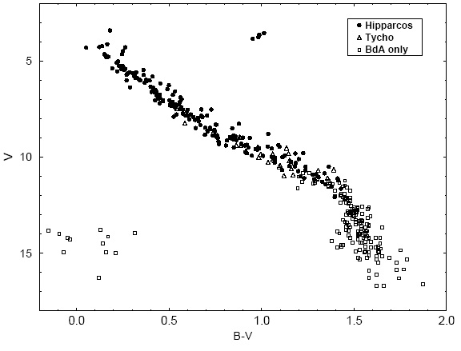

Hipparcos star datasetThe CASt datasetHIP_star.datAstronomical background The key to understanding the properties and evolution of stars is the Hertzsprung-Russell diagram, first studied around 1910. It plots the luminosity of stars along the ordinate, and the color of stars along the abscissa. When a random selection of bright stars is plotted, one sees the "main sequence" of hydrogen-burning stars and the later "red giant" stars burning helium and other nuclei. The main sequence is most clearly seen when the stars in a coeval (= born together), codistant "open cluster" of stars are plotted. The nearest open cluster is the Hyades cluster and its HR diagram has been carefully studied for many years (e.g. Pinsonneault et al. 1998). The main difficulty in establishing the HR diagram for a sample of stars is determining their distances. For nearby stars, this can be done with extremely precise measurements of their positional motion every year as the Earth orbits the Sun. This is called the parallax. In the 1990s, the European Space Agency launched a satellite called Hipparcos that measured stellar parallaxes with more precision than previously achieved for ~100,000 stars. The Hipparcos catalog is thus often used for HR diagram studies. Bright Hyades members have a mean parallax of 22 mas in the Hipparcos database corresponding to a distance of 45 pc. A famous study of the Hyades cluster using Hipparcos data has been made by Perryman et al. (1998). Dataset We have extracted a subset of 2719 Hipparcos stars which include many Hyades members with the selection criterion that the parallax lie between 20 and 25 mas (i.e. Hipparcos stars with distances 40-50 pc). The extraction was made using the Vizier catalog service. The file was manually edited a bit to give a convenient format & header resulting in the tab-separated ASCII file HIP_star.dat. This dataset has the following columns:
The HR diagram can be plotted by plotting logL vs. B-V where (roughly) the log-luminosity in units of solar luminosity is constructed logL=(15 - Vmag - 5logPlx)/2.5. All logs are base-10. 
The plot above from Perryman et al. (1998) shows the HR diagram of the Hyades from Hipparcos data once Hyades members are discriminated from background stars. It is tricky to select out Hyades members in a reliable and complete fashion. Their sky positions are centered around RA=67 degrees & DE=+16 degrees, but they also share converging proper motions with vector components pmRA and pmDE. Statistical exercises
|
    |